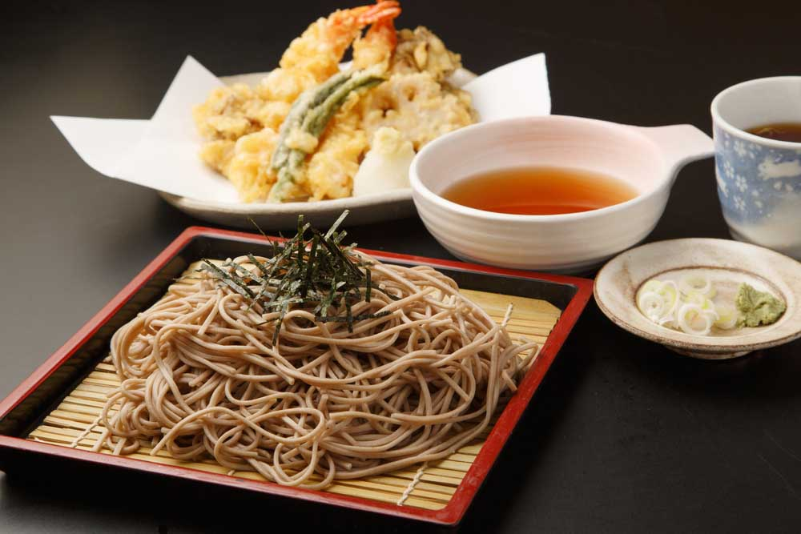

Una de las referencias escritas más tempranas sobre el uso del sushi en Japón data del año 718 como parte de un
tratado de leyes denominado Yororitsuryo (養老律令), en él se hace referencia al uso del sushi como forma de pago de
impuestos.
Ya en el siglo XVII se añadió vinagre de arroz, por lo que el tiempo de fermentación se redujo
considerablemente. El vinagre se utiliza para conservar los alimentos, por eso este plato es tan popular. No fue
hasta el siglo XIX que el sushi empezó a prepararse sin fermentación y se convirtió en un alimento callejero
porque se podía comer con las manos. Durante los períodos Edo y Meiji, los puestos de sushi eran comunes y no
eran un plato que se comía en los restaurantes. Después de la Segunda Guerra Mundial, el sushi comenzó a
servirse en los restaurantes y se consideró un plato más lujoso. Estos puestos están desapareciendo, entre otras
cosas, porque las condiciones sanitarias no se consideran las mejores.
El descubrimiento del vinagre de arroz, hizo que se mezclase el vinagre con el arroz recién cocinado y se
descubriera que no era necesario fermentar el pescado para obtener los sabores y aromas del nare-sushi. A esta
nueva forma de ingerir el pescado crudo con arroz la denominaron haya-zushi (sushi rápido), debido a que su
preparación era mucho más simple y rápida. Este tipo de sushi se hizo muy popular y pronto se vendía en puestos
callejeros en las zonas más humildes de Osaka.
La preparación del haya-zushi evolucionó durante el período Edo en las cercanías de Edo (la actual Tokio y que
significa en japonés: "puerta en la bahía") y al final de este periodo el cocinero Hanaya Yohei (1799-1858) creó
un nuevo estilo denominado nigiri-zushi (sushi formado con las manos). Esta preparación rápida del sushi es la
que se conoce mayoritariamente en la actualidad y la ha convertido en un elemento de fast food.